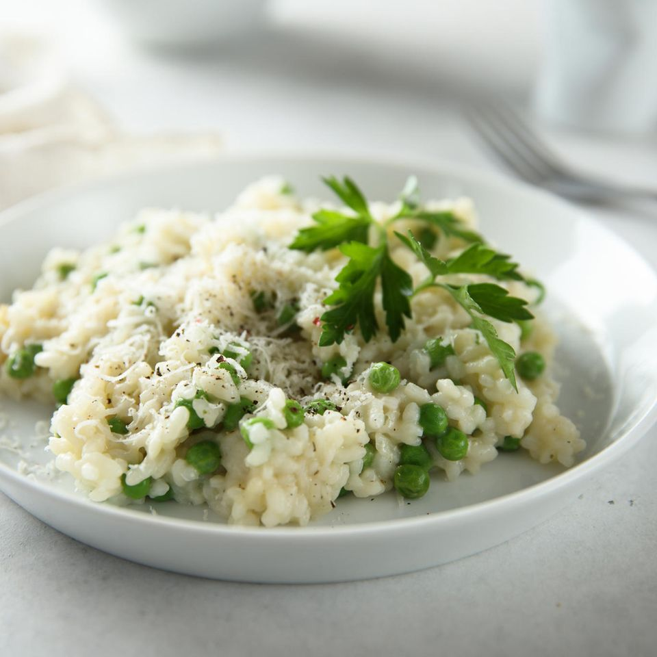

Pea risotto

Description
Pea risotto is super quick to prepare and an absolute feel-good dish. With
grated cheese and a knob of butter, it becomes especially creamy.
Ingredients
- 1 Onion
- 1 Clove of garlic
- 1 l vegetable stock
- 60 g Italian hard cheese (e.g. Grana Padano)
- 3 tbsp olive oil
- 300 g risotto rice
- 150 ml white wine
- 200 g peas (frozen)
Steps
-
Peel and finely chop the onion and garlic. Heat the oil in a large
saucepan and fry the onion and garlic for 2 minutes.
-
Add the rice and fry for 1 minute. Pour in the wine and let it
evaporate.
-
Add the stock and simmer for 15 minutes, stirring occasionally. Add the
peas and cook for 5 minutes.
-
Season with salt and pepper and serve with grated cheese and a knob of
butter.